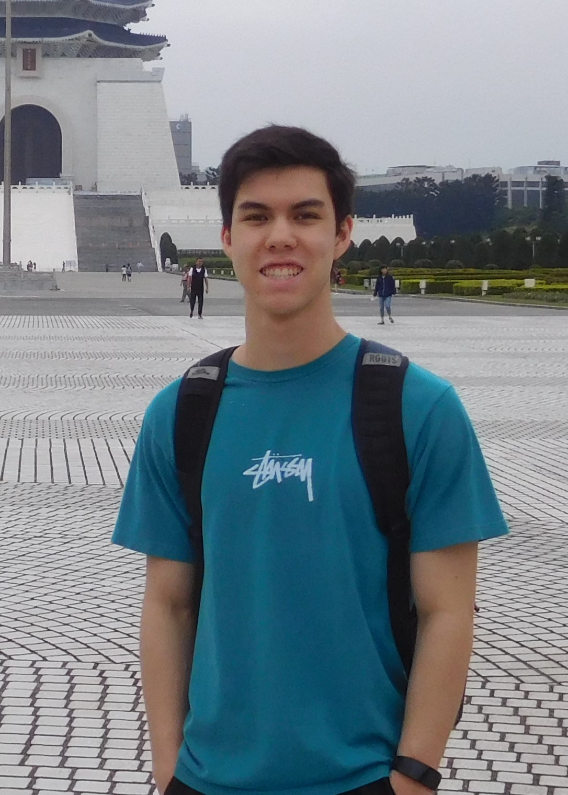

Hi! My name is Keaton Lees and I'm currently studying Systems Design Engineering at the University of Waterloo. I am an enthusiastic learner who loves to explore new technology and continously expand my knowledge of the working world. I equally enjoy and have experience with both software and hardware as I believe both are crucial in achieving the final goal.
Previously, I have worked at Ballard Power Systems, located in Burnaby, BC as Systems and Controls Engineer and Systems Engineer. I have also founded my own 3D-printing company, kleez3dprints, and have also worked at RoboKids Canada as a Senior Software Instructor.
Outside of school, you can find me doing everything from designing something to 3D-print to going to the gym to messing around with PC's. I have thoroughly enjoyed 3D-printing ever since I bought my own printer in 2018. You can see some of my recent prints on the Projects Page, or on Instagram @kleez3dprints.
On the other hand, I love to stay active. I have competed in Track and Field for the past 8 years, as well as being a Level 2 Official, and have only recently stopped due to university. However, I still like to go outside and run, workout at the local gym, or get together with some friends to play some indoor or beach volleyball. Prior to track, I competed in Taekwondo and recieved my 3rd Degree Black Belt after 10 years of dedication; Taekwondo taught me self-discipline and perseverance, characteristics that I still apply to my everyday tasks.